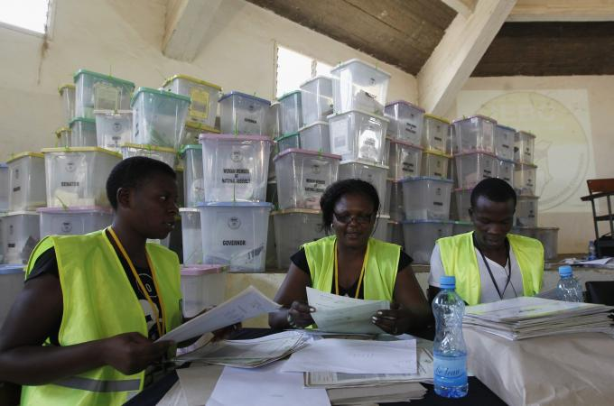

By Peter Greste, 15 March 2013, for Al Jazeera.
Last week's elections in Kenya were supposed to be the make-or-break polls. It was the election that could go one of two ways – either plunging the country back into the dark days of early 2008 when, in the wake of the 2007 election, Kenyans began killing one another over the disputed results; or they would defy the critics, vote peacefully, and set the country firmly on a path towards economic progress and development.

Uhuru Kenyatta won 50.07 percent of the vote, narrowly avoiding a runoff [Reuters]
In the end, it seems the nation went for the second option. In the days following the election, Kenyans rightly patted themselves on the back for defying their critics (and foreign journalists), by turning out in huge numbers (86 percent) and voting almost without throwing so much as an irritated slap.
In fact, the mood became so obsessed with "peace," that anyone who questioned the process, or even vaguely implied that the country retains a capacity for fighting, got slapped down with howls of derision or accusations of "racism" and worse – "tribalism."
All that seemed to confirm the "edge of the abyss" theory of the 2007/08 crisis; that Kenyans pushed themselves to the crumbling brink, stared into the yawning void, and realised that it wasn't a place anyone wanted to return to.
Kenyan blogger and cartoonist Patrick Gathara brilliantly described the problem in this post in which he spoke of a collective fear of confronting the monsters that lurk beneath the national house.
What was true during polling day and the weeklong count that followed, now appears true in its aftermath. The problem lies in some disturbing inconsistencies that have emerged from the numbers produced by the Independent Elections and Boundaries Commission that ran the vote.
The CORD coalition whose candidate Raila Odinga came a clear second in the elections, first raised concerns in the days immediately following the poll. At first, most journalists – the local media in particular – seemed to dismiss the allegations as cheap politics; as an attempt to claw back victory from defeat, or at the very least deprive Odinga's rival Uhuru Kenyatta of a first-round victory and force an expensive runoff that nobody but he wanted.
But then a group of civil society activists raised similar concerns, and a handful of people have started looking more closely at the data.
CORD's basic complaint is that the numbers simply don't add up. Several constituencies recorded turnouts of greater than 100 percent (you need to do the sums yourself – some of the IEBC's own calculations for turnout seem wrong); there are different figures for the numbers of registered voters in key constituencies across different documents, and so on. And, the coalition points to a catastrophic failure of several supposedly high-tech systems that were intended to guarantee a credible and transparent process, as evidence of serious problems. The coalition says those problems make it impossible to know whether the declared outcome really is the collective will of Kenyan voters.
CORD has gone a step further and alleged fraud, which on the evidence they've presented, looks to be a step too far. On the numbers alone, it's impossible to know whether it was a deliberate attempt to fiddle the outcome, or simply a combination of human error and system failure.
But the discrepancies are disturbing enough to suggest that something has gone wrong with the process. And at the very least, they raise difficult questions that demand some answers. Inevitably, in such a massively complex process that requires exhausted humans to deal with long numbers, mistakes will creep into the system. Some errors are hardly surprising then, and in an election with a clear winner, those errors might not make any real difference to the outcome.
But although this election seemed to deliver a decisive victory to Uhuru Kenyatta, he still only managed to avoid a runoff by 0.07 percent of the vote. And with that crucial margin so paper-thin, all of a sudden the discrepancies that CORD is pointing to become hugely important.
Both CORD and the civil society coalition plan legal actions to challenge the integrity of the system, as is their right under the law. Both have been criticised for questioning an election that on the face of it seemed to go well. Yet both are also right in saying that for the sake of long-term stability, those issues need to be resolved, even if it means short-term disruptions.
Kenya might need to confront its demons once more.